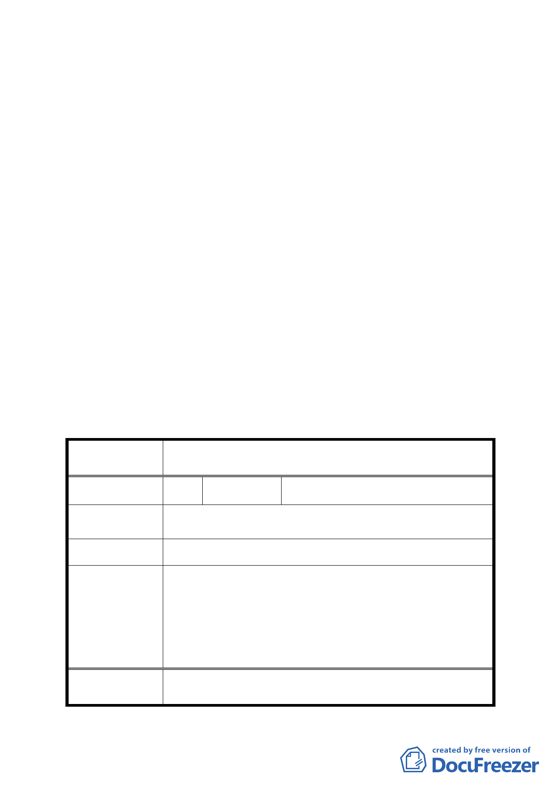

決議：
一、本案部分土地位於保變住地區土地開發方式修訂之全市通案
處理原則，包括計畫書第8、9、10頁所提：位於建物密集地
區擬剔除於重劃區範圍外、計畫區邊緣且臨接已開闢道路、
非位於行政院公告之山坡地範圍、須繳納重劃負擔之代金、
面臨既成道路留設等規定，為後續類似個案適用之依據；至
於臺北市保變住地區類似個案之通盤檢討，則請都市發展局
後續檢討辦理。
二、本案除下列內容修正外，餘依市府公開展覽計畫書及本次都
市發展局補充會議資料所提修正內容通過。
（一）計畫書第9頁 伍、土地使用分區管制計畫「二、…將來重
建或改建面臨既成道路規定…」，因本案基地現況為空地，
故「重建或改建」等文字應修正為「新建、重建或改建」，
以符實需。
（二）計畫書第12頁變更土地使用同意書須載明申請人同意依據
計畫書規定辦理等相關文字，以為完備。
三、公民或團體陳情意見審決如後附綜理表
臺北市都市計畫委員會公民或團體所提意見綜理表
案
名
修訂臺北市士林區至善段三小段 49 地號土地開發方式
(保變住編號住 25 地區)細部計畫案
編
號1
陳情人 胡獻發
陳
情
理
由
於保變住編號 25 地區內之老舊住宅，應比照一般住一地
區，可自由申請進行重建。
建 議 辦 法 比照至善三小段 49 地號辦理。
（一）保變住地區原有合法房屋得依「保變住地區原有合
法建築物整建及增建臨時建築暫行作業原則」辦理
市府回應意見
整建及修建。
（二）陳情人土地如符合本案保變住建物密集地區檢討剔
除於重劃範圍之情形，土地所有權人亦得依都市計
畫法第24條規定提出申請。
委
決
員
會
議
依市府回應意見辦理。
-7-